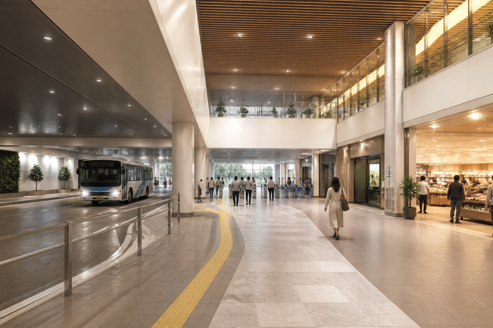
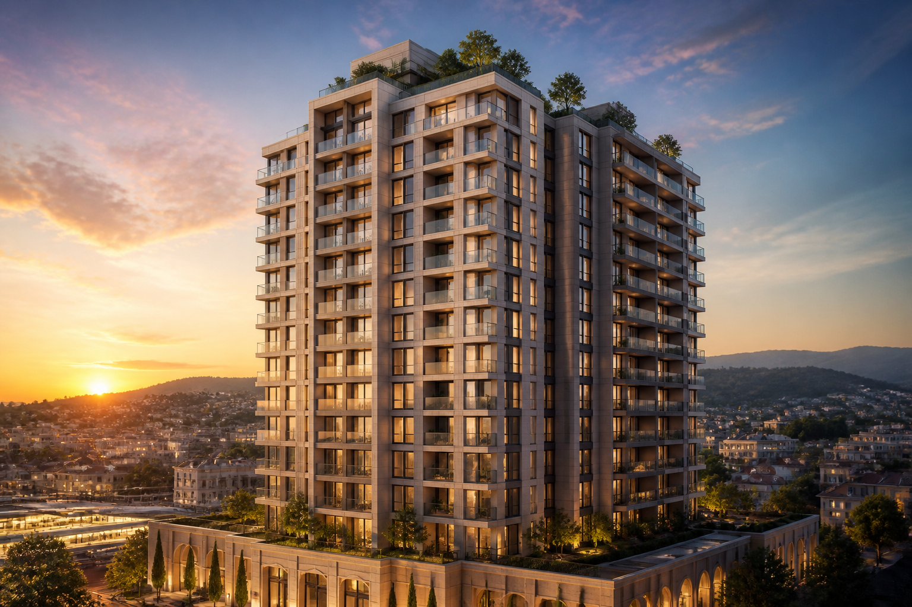
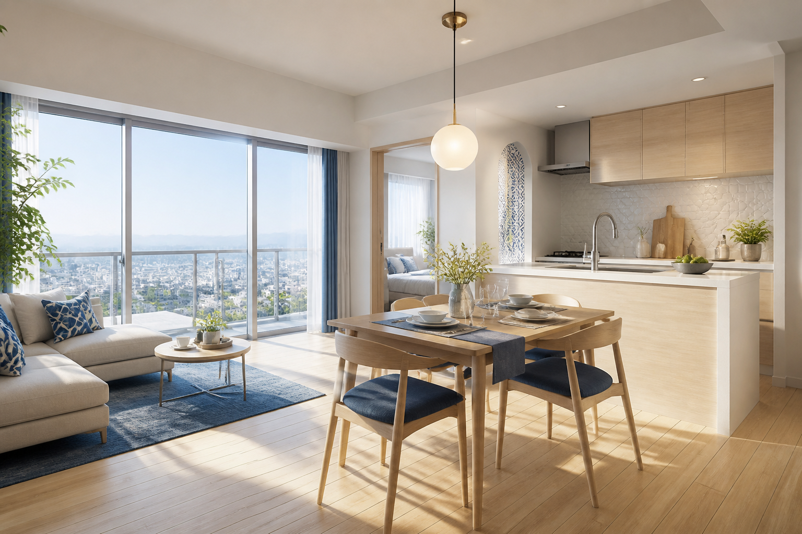
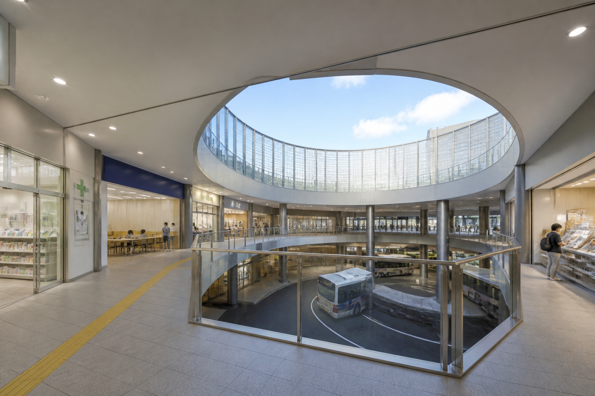
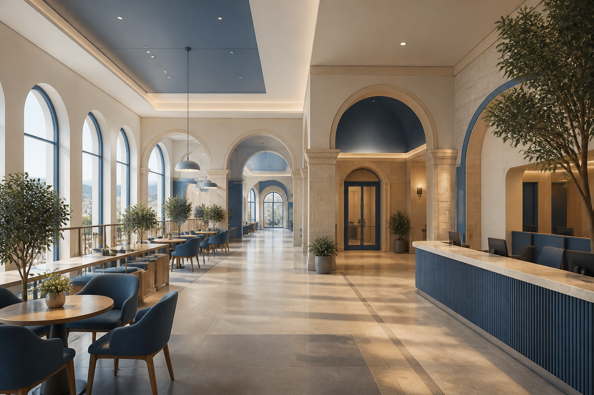
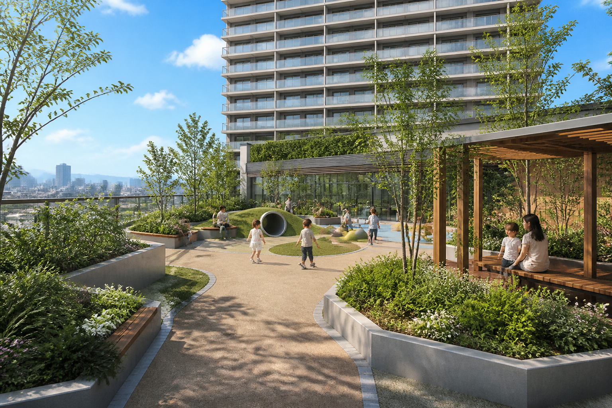

1F｜駅・バス・東急ストア
道路とバスロータリーを建物の中に収め、駅改札と商業施設をつなぎます。
商業施設と屋上公園につながる、駅直結のマンション計画です。

労作展の調査をもとにした想定価格です。実際の募集価格ではありません。

1LDKを想定した、明るく落ち着いたリビング・ダイニングです。

道路とバスロータリーを建物の中に収め、駅改札と商業施設をつなぎます。

吹き抜けはロータリー上部だけ。外廊下に薬局・河合塾などを配置します。

銀行やカフェ、マンションの入口がある落ち着いたフロアです。

子どもが遊べる緑の公園。ここから上が住居フロアです。